Целью данной лабораторной работы является приобретение практических навыков установки операционной системы на виртуальную машину , настройки минимально необходимых для дальнейшей работы сервисов.
Oracle VM VirtualBox - программа для виртуализации, позволяющая запускать несколько ОС на одном компьютере Поддерживает гостевые системы Linux, Solaris, OS/2, Windows(XP-11), macOS (эксперементально) Работает на хостах: Windows, Linux, macOS, FreeBSD, Solaris
Создаю виртуальную машину Linux
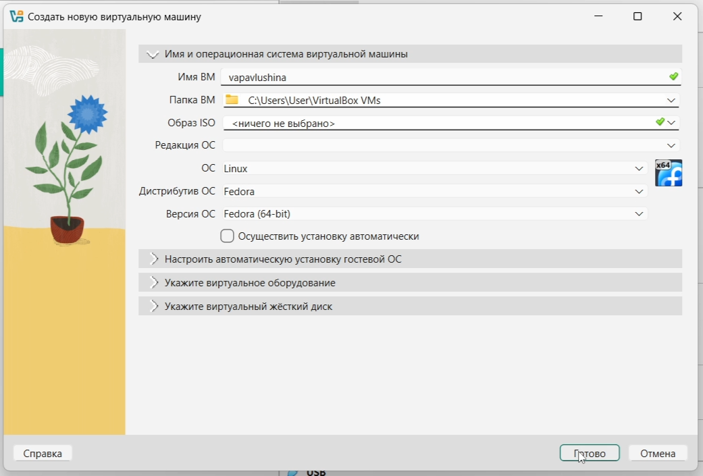
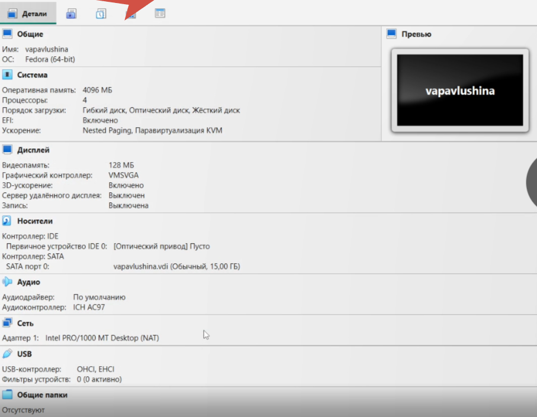
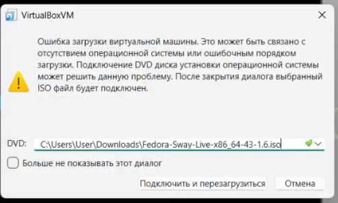

После мы выходим из виртуальной машины, заходим в настройки, и удаляем устройство из контроллера IDE. Запускаем машину вновь, переходим в режим суперпользователя и скачиваем необходимые пакеты через development-tools
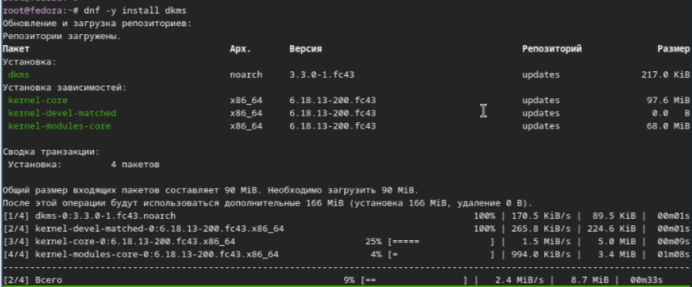
Выходим из машины и добавляем оптический диск VBoxGuestAdditions.iso, заходим обратно, переходим в режим суперпользователя, делаем файловую систему доступной для чтения и записи в общей иерархии папок.
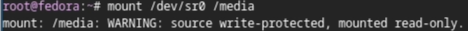

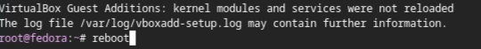

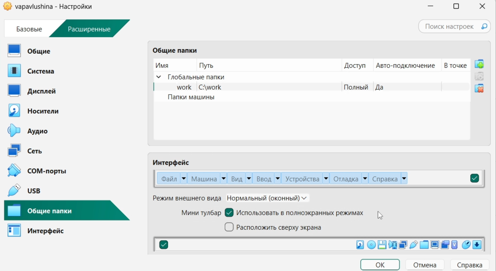
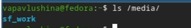
Выполняем reboot, заходим в режим суперпользователя

Скачиваем программы для удобства работы в консоли

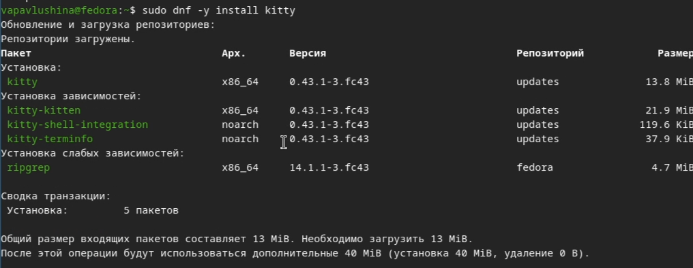
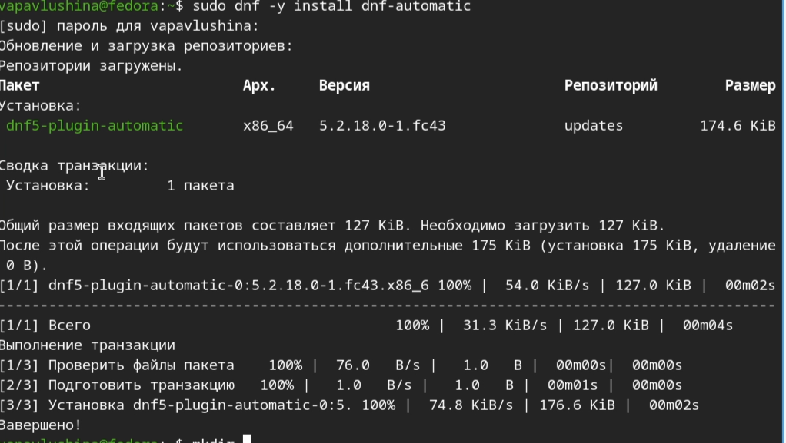
Задаём конфигурацию в файле /etc/dnf/automatic.conf и запускаем таймер
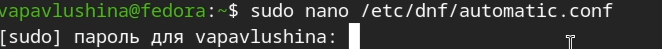
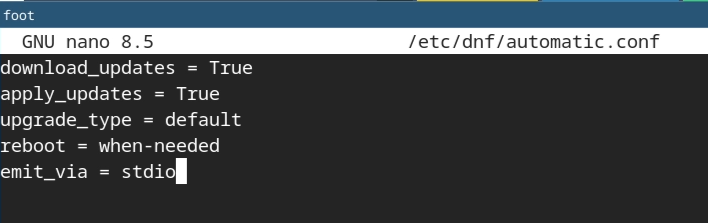
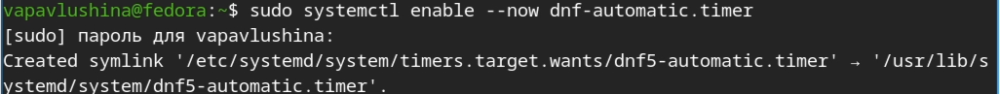
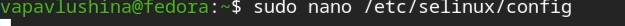
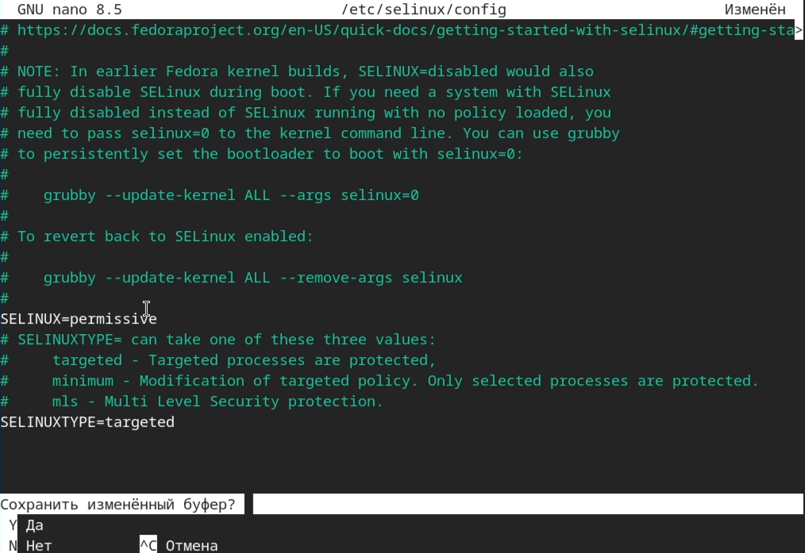
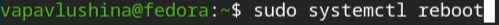


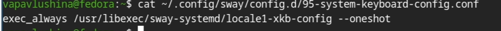
Редактируем конфигурационный файл /etc/X11/xorg.conf.d/00-keyboard.conf
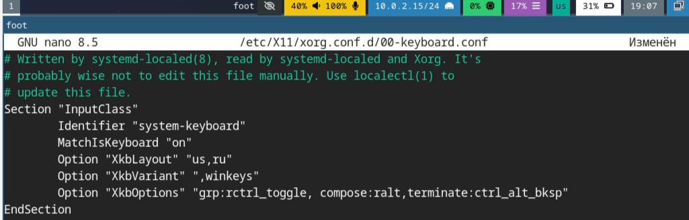

переходим в режим суперпользователя, обновляем пароль, устанавливаем имя хоста
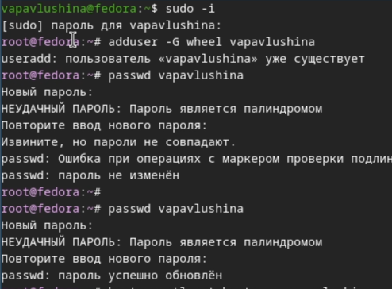
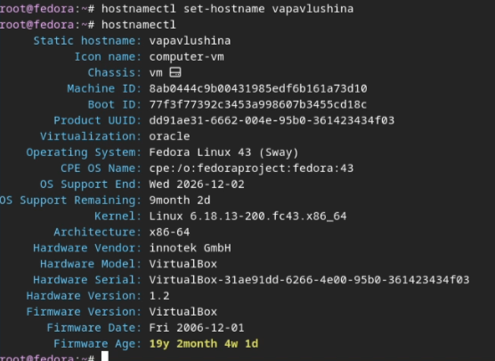

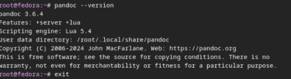
Далее переходим в github и скачиваем нужную версию pandoc
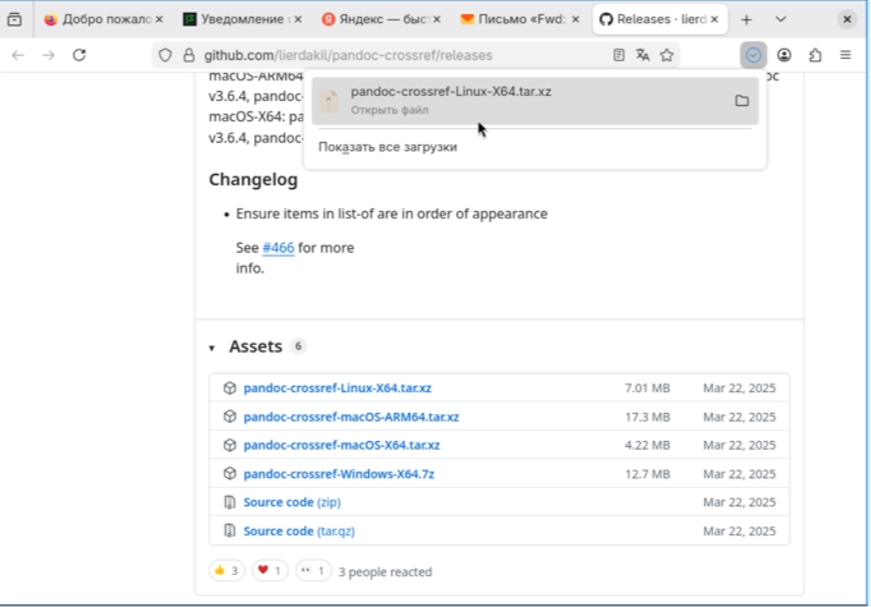
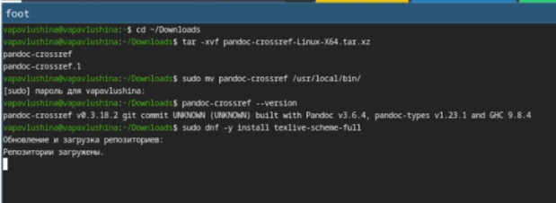
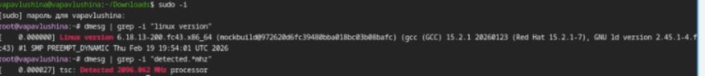
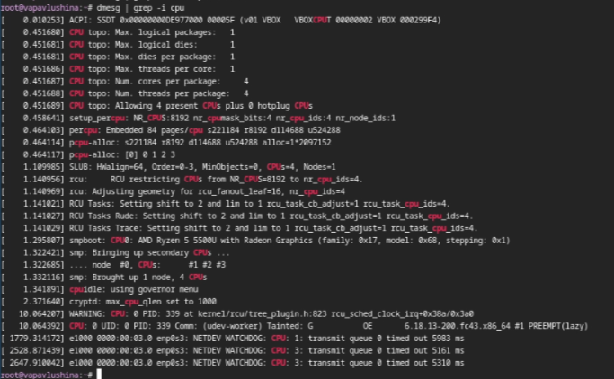
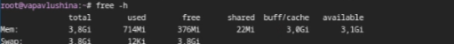
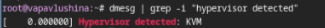
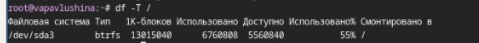
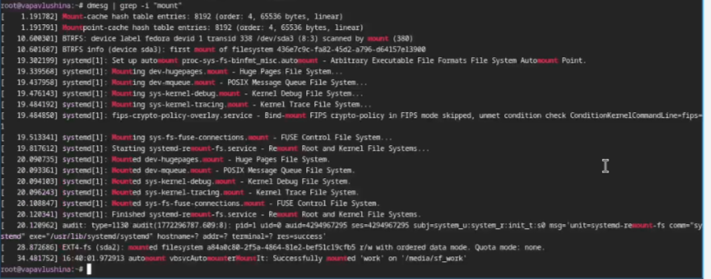
3.Файловая система - это способ организации и хранения данных на
диске. Пример: ext4 - стандартная для Linux, NTFS - стандартная для
Windows. 4.Чтобы посмотреть подмонтированный диск нужно: написать
команду mount (покажет все подключённые системы), а затем df -h (покажет
диски и место, в удобном для чтения виде). 5.Чтобы удалить зависший
процесс нужно: найти PID процесса (ps aux | grep <имя_программы>), затем
отправить сигнал завершения (kill
Приобрела практические навыки установки операционной системы на виртуальную машину , настройки минимально необходимые для дальнейшей работы сервисов.